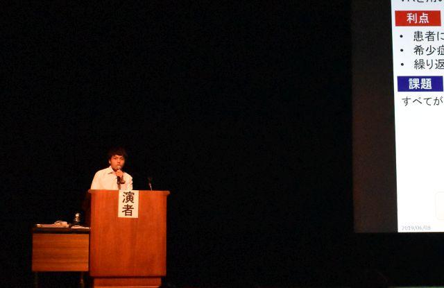

- 2019.06.07
- M2 篠崎真良君，M1 関口陽太君が沖縄コンベンションセンターで開催した第58回日本生体医工学会大会にて発表を行いました．



- 2019.5.30
- 中口，吉村が鄭州大学第5付属病院を訪問し，"Augmented Reality for Medical Applications"というタイトルで講演しました．

- 2019.5.31
- 当研究室が開発した拡張現実型聴診トレーニングシステムEARSが，医学雑誌Hospitalistに掲載されました．
- 2019.5.18
- 中口が横浜で開催された第2回医用VRセミナー「医学及び看護教育へのVR技術応用」において，「拡張模擬患者を実現するARシミュレータ」について講演しました．
- 2019.4.19
- ブラジル・サンパウロ大学のGeorge Cardoso先生が研究室を見学しました．
- 2019.4.1
- 修士1年 徳嶺 達紀君，研究生 杜 楽然さん（中国・湖北省出身）がメンバーに加わりました．
- 2019.3.18
- 学内で開催された国際ワークショップ Multimodal Medical Engineering (MME) Workshop- Color Imaging in Medicine -にて，M1 唐啓超君とM1 篠崎真良君が口頭発表を行いました．

- 2019.3.18
- 学内で開催された工学研究院 研究サブ領域D,F発表会にて，B4 関口陽太君がポスター発表を行いました．

- 2019.3.16
- 当研究室が開発した拡張現実型聴診トレーニングシステムEARSが，都内で開催された総合診療勉強会「東京どまんなか」で導入されました．